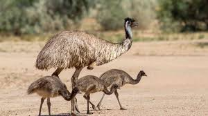

Emus are large, flightless birds that are native to Australia. While their relative, the Ostrich is more widely recognised, Emus are much more prominant than them. They are locatable all throughout Australia, but there is slightly less distribution in central areas.
Emus have brown ploomage, can reach about 6.2 feet tall, and are extremely fast sprinters. They also travel in semi-large flocks, usually with around 8-10 birds in a group. These attributes allows them to survive in large numbers in the gruelling Australian Outback as well as more regulated areas.
Emus were once largely used as a food source by indigenous Australians and early settlers in the area, but this became much less common after the introduction of foreign meats. Later they were hunted in mass numbers during the Great Emu War, which was an attempt at mitigation of their population. Currently emus live well all throughout Australia and are not at risk for endangerement. There are however several preservation acts inplace that ensure they are protected.
Emus appear prominently in Australian mythology and are recognized as the national bird of Australia. In Australia there are many locations, bussinesses, and brands that invlove emu as a title or use them as some sort of symbol. All in all, emus have left a huge impact on Australian culutre and symbology.